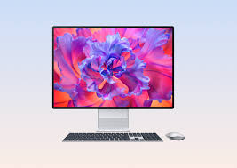
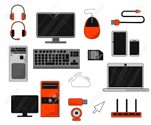
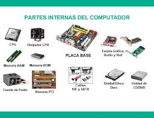
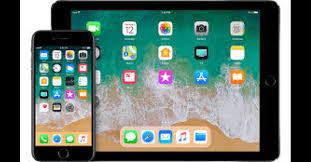

Nuestros Productos
En D Todo Computadoras, ofrecemos una amplia gama de productos de alta calidad para satisfacer todas tus necesidades tecnológicas.
Computadoras
Tenemos una variedad de computadoras de escritorio y laptops de las marcas más reconocidas, con diferentes especificaciones y precios para adaptarse a tus necesidades.
Accesorios y Periféricos
Contamos con una amplia selección de accesorios y periféricos, como teclados, ratones, impresoras, escáneres y más, para complementar tu setup informático.
Componentes de Computadora
Ofrecemos componentes de computadora de alta calidad, como procesadores, tarjetas gráficas, memorias RAM, discos duros y más, para actualizar o construir tu propia computadora.
Dispositivos Móviles
Tenemos una selección de smartphones y tablets de las marcas más populares, con diferentes características y precios para satisfacer tus necesidades móviles.
